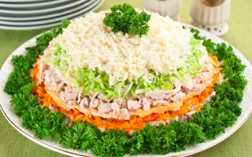

Салат "Весенний день"
Салат яркий, вкусный, сытный. Рекомендую использовать именно лук порей, он придает салату интересный вкус. Из указанного количества ингредиентов получается 6–8 порций.
Ингридиенты:

300 г куриного филе
3 яйца
400 г картофеля
300 г моркови
200 г маринованных шампиньонов
лук порей или репчатый
соль
майонез
Приготовление
Картофель и морковь отварить до готовности.
Остудить, почистить.
Куриное филе отварить до готовности
(варить около 20 минут после закипания).
Картофель натереть на мелкой терке.
Морковь натереть на мелкой терке.
Филе мелко нарезать.
Яйца натереть на мелкой терке.
Грибы мелко нарезать.
Лук нарезать полукольцами.
Если Вы используете репчатый лук,
его необходимо мелко нарезать,
залить кипятком на 10 минут,
затем воду слить.
На дно тарелки (я использовала тарелку диаметром 25 см)
выложить картофель, немного посолить, смазать майонезом.
На картофель выложить грибы, смазать майонезом.
На грибы выложить морковь, смазать майонезом.
На морковь выложить филе, немного посолить, смазать майонезом.
На филе выложить лук.
На лук выложить яйца, немного посолить.
Украсить салат зеленью.